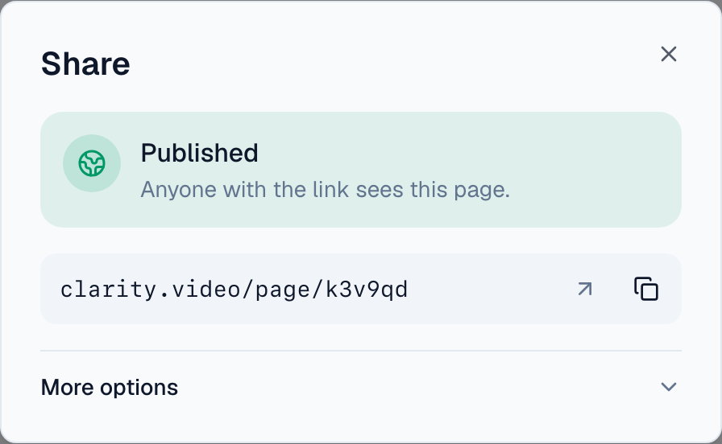
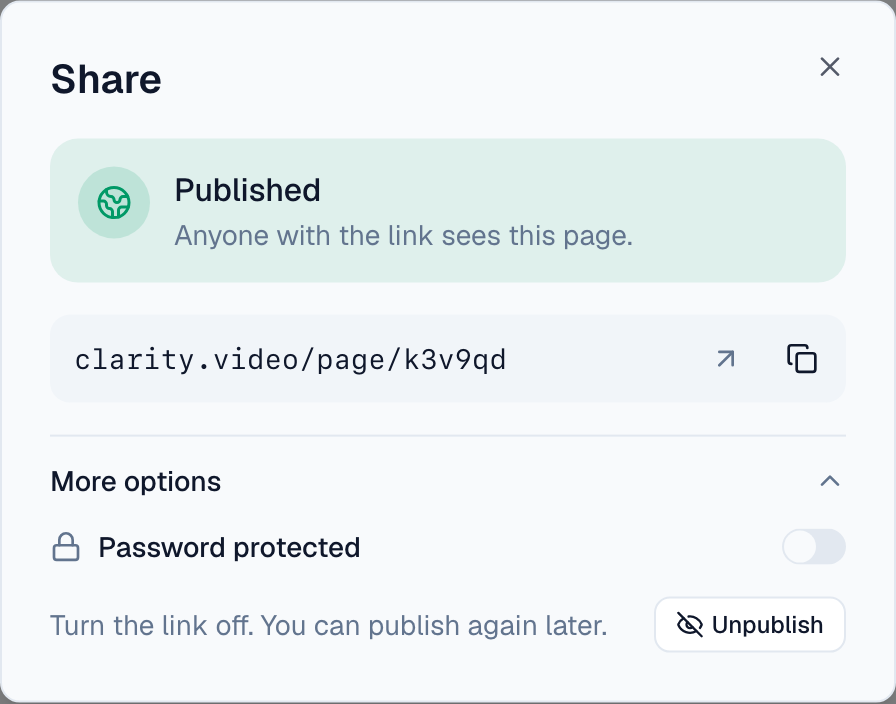
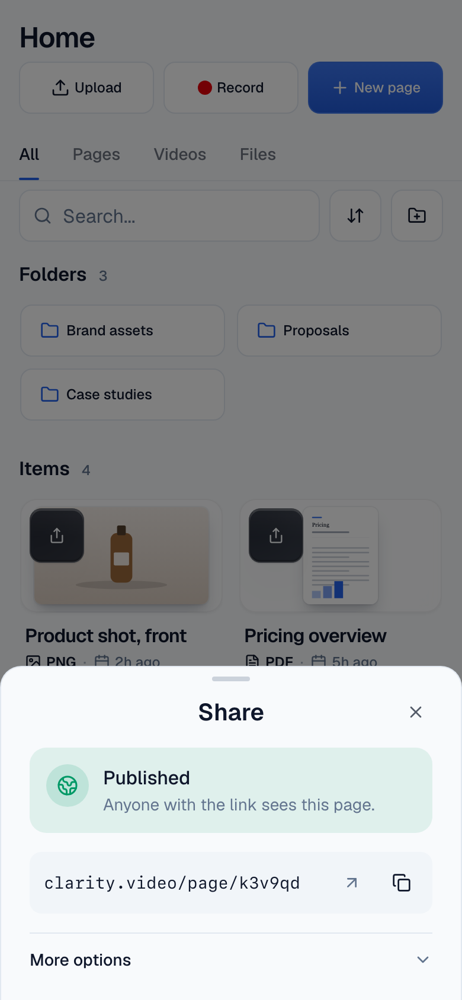
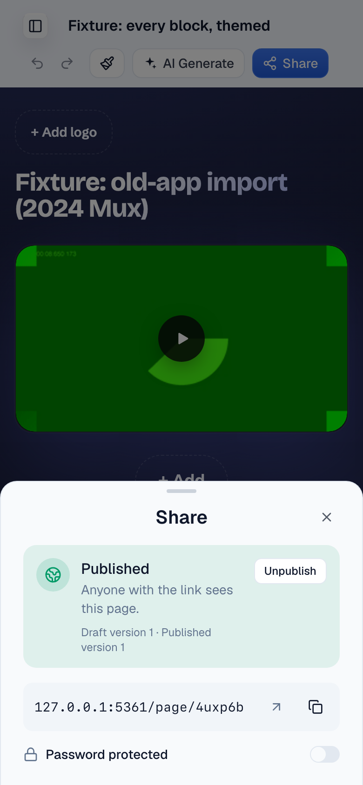

Share dialog: Unpublish and password under "More options"
Share dialog from the library card and the editor topbar.
The dialog shows the published state, the link with open and copy, and a collapsed "More options" row. Opening it reveals the password switch and Unpublish. U08 removes the version numbers tonight.
The problem
Unpublish and the password switch sit beside the copy button, the one control every rep needs. Password protection is on 13 customer pages ever (0 of 288 recent), and 3 pages have ever been unpublished.
What it would look like








What the data says
Customer pages
| Measure | Last 90 days | All time (live) |
|---|---|---|
| Pages | 288 | 5,431 |
| Password enabled | 0 | 13 |
| Published (has a publication) | 223 | 5,354 |
| Published then unpublished (route disabled) | 1 | 2 |
| Never published | 65 | 77 |
| Draft ahead of the publication | 1 | 3 |
The explicit publish step shipped 2026-09-30; older pages got publications by backfill, so "published" mostly means "existed before". Unpublish disables the share route and keeps the publication (journey-page-access.ts:87-94).
Options
Two controls move one click away. No behaviour changes.
13 pages use it. Deleting means a plan for those 13 and a feature gone for the next proposal that needs it.
Spreads publishing state over two places.
Questions for William
Recommended: Yes.
Recommended: Yes, hidden. 13 pages use it and it costs nothing under More.
PRs once decided
JourneyPageShareDialog.tsx: a disclosure row holding the password controls and Unpublish; opens itself when the page is password protected or unpublished so the state is never hidden. Lands after U08. Evidence: dialog from library and editor, desktop and phone, a protected page opening with More expanded.